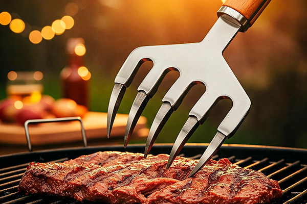

10 Acessórios Essenciais (ou que Facilitam a Vida) do Churrasqueiro

Um bom churrasco começa com bons ingredientes, mas ter as **ferramentas certas** pode transformar a experiência, tornando tudo mais prático, seguro e até mais saboroso. Seja você um iniciante ou um mestre churrasqueiro experiente, alguns acessórios são quase indispensáveis, enquanto outros simplesmente facilitam (e muito!) a vida na beira da grelha.
Selecionamos 10 acessórios que consideramos essenciais ou extremamente úteis para elevar o nível do seu churrasco:
-
1. Faca do Chef de Qualidade
Por quê? Essencial para tudo: cortar a carne crua, fatiar depois de pronta, picar temperos. Uma faca bem afiada e de bom tamanho (8 a 10 polegadas) garante cortes precisos, preserva os sucos da carne e evita acidentes.
Dica Funcional: Invista em uma faca de aço de boa qualidade (aço inox alemão ou japonês são ótimos) e mantenha-a sempre afiada. Lave à mão e seque imediatamente após o uso.
-
2. Chaira (Afiador)
Por quê? Não adianta ter uma boa faca se ela não estiver afiada. A chaira serve para **assentar o fio** da faca antes de cada uso, mantendo o corte alinhado e eficiente. Para afiar de verdade (quando a faca perde o fio), use uma pedra de afiar ou um afiador específico.
Dica Funcional: Passe a faca na chaira em um ângulo de aproximadamente 20 graus, algumas vezes de cada lado, antes de começar a cortar. Faça isso com frequência.
-
3. Pegador Longo (Pinça)
Por quê?** Fundamental para manusear as carnes na grelha quente com segurança, sem furá-las (como um garfo faria) e perder seus preciosos sucos. O cabo longo protege suas mãos do calor.
Dica Funcional:** Escolha um pegador firme, de aço inox e com boa mola. Evite modelos muito frágeis. Use-o para virar bifes, linguiças, frango, etc.
-
4. Tábua de Corte Grande e Estável
Por quê?** Você precisa de espaço para cortar peças grandes de carne, tanto cruas quanto prontas. Uma tábua grande e que não escorregue na bancada é mais segura e prática.
Dica Funcional:** Prefira tábuas de madeira (com tratamento antibacteriano) ou polietileno. Modelos com canaleta ao redor ajudam a coletar os sucos da carne descansada. Tenha, se possível, tábuas separadas para carne crua e carne pronta/vegetais.
-
5. Termômetro Culinário Digital
Por quê?** A única forma 100% precisa de garantir o ponto exato da carne, especialmente em peças mais grossas ou assados longos. Elimina a adivinhação.
Dica Funcional:** Um termômetro de leitura instantânea é ideal para bifes e peças menores. Para assados longos (costela, brisket), um termômetro com sonda e cabo (que fica fora da churrasqueira) é excelente. Veja nosso artigo sobre como identificar o ponto da carne.
-
6. Garfo Trinchante (Garfo de Churrasco)
Por quê?** Útil para firmar peças grandes de carne na tábua enquanto você fatia, e também para servir. Possui dentes longos e firmes.
Dica Funcional:** Evite usar o garfo trinchante para virar a carne na grelha, pois ele fura a peça e causa perda de sucos. Use o pegador para isso.
-
7. Pincel Culinário (Silicone)
Por quê?** Perfeito para aplicar molhos (como barbecue na costelinha), marinadas ou manteiga derretida na carne ou em legumes durante o cozimento.
Dica Funcional:** Os pincéis de silicone são mais higiênicos, fáceis de limpar e resistentes ao calor comparados aos de cerdas naturais.
-
8. Acendedor Rápido/Prático
Por quê?** Acender a churrasqueira pode ser demorado e frustrante. Acendedores elétricos, chaminés de acendimento ou até mesmo os cubos de acendimento rápido facilitam muito o início do processo.
Dica Funcional:** A chaminé de acendimento é uma das formas mais eficientes e rápidas de ter brasa uniforme sem usar fluidos químicos.
-
9. Luvas Térmicas
Por quê?** Segurança em primeiro lugar! Para manusear grelhas quentes, ajustar a brasa, pegar peças muito grandes ou mexer em panelas sobre a churrasqueira.
Dica Funcional:** Procure luvas que ofereçam boa proteção contra o calor, mas que ainda permitam alguma flexibilidade nos dedos.
-
10. Grelha Dupla (para Peixe/Legumes)
Por quê?** Facilita muito virar alimentos mais delicados, como peixes inteiros, postas ou legumes fatiados, sem que eles desmontem ou caiam pela grelha principal.
Dica Funcional:** Existem modelos específicos para peixes e outros mais genéricos tipo "cesto" que são ótimos para vegetais picados ou camarões.
Conclusão
Investir em bons acessórios não é frescura, é uma forma de tornar seu churrasco mais seguro, prático e com resultados ainda melhores. Comece pelos mais essenciais e vá adicionando outros conforme sua necessidade e paixão pela grelha aumentam!
Quer Mais Dicas de Equipamentos?
Inscreva-se para receber reviews de churrasqueiras, facas, termômetros e muito mais!